June to March is the best time to visit Ajanta Ellora Caves due to pleasant weather. Read More
Ajanta And Ellora Caves
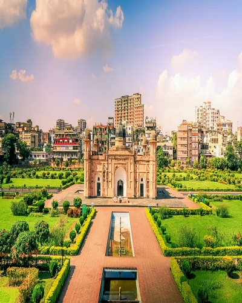
Aurangabad
The best time to visit Aurangabad is between October to March as during this time the city remains pleasant and green. Monsoon is also a nice time to visit the city of Aurangabad as the temperature remains nearly 35°C during this time. The monsoon rains generally start in July and last till the end of September.Read More
Aurangabad
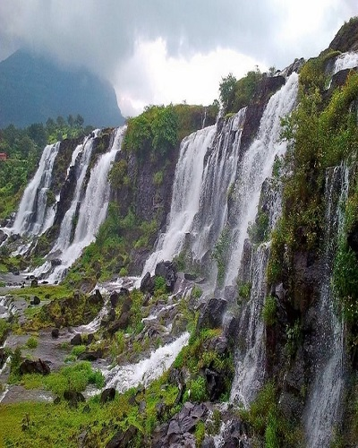
Bhandardara
Winters are quite coold here in Bhandardara with the mercury dropping down to 10 °C. This weather is generally preferred to visit the place. March to June is good for exploring thenatural attractions. October to February has a very pleasant climate and is perfect for sightseeing.Read More
Bhandardara
Kolad
Winter Season is considered the best time to visit Kolad. Summer season starts from the month of March and continues till the month of May. Read More
Kolad
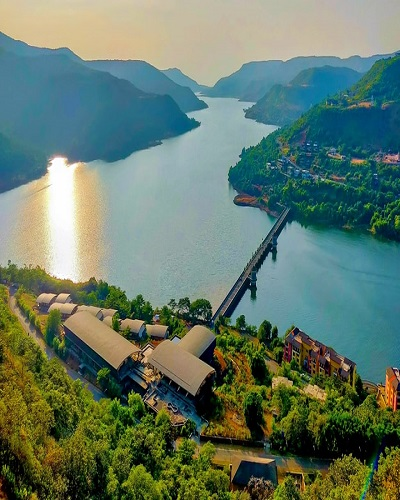
Lavasa
Lavasa is a Hills & Mountains destination. The best time to visit Lavasa is October, November, December, January, February and March. Since this is the peak season expect a little crowd during this time. July, August and September period experiences moderate weather.Read More
Lavasa
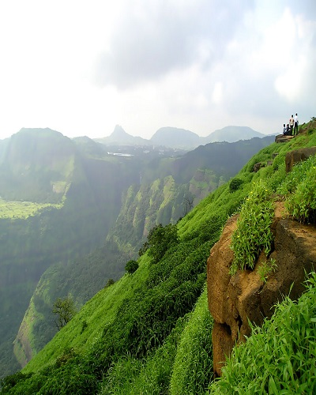
Lonavala
The best thing about Lonavala and Khandala is the pleasant weather all year round. The best time to visit is June to September, during monsoon season, when surroundings come alive in beautiful lush greenery, and the lakes get filled up to the brim with the rain.Read More
Lonavala
Mahabaleswar
Winter is from December to February and it is the best season to visit Mahabaleshwar.Read More
Mahabaleswar
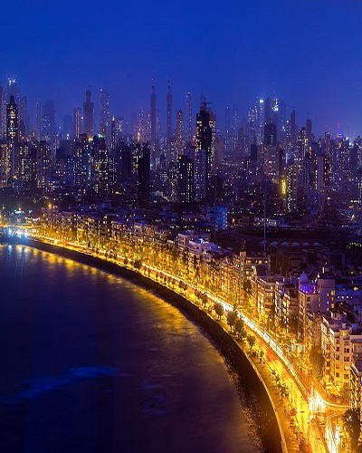
Mumbai
The best time to visit Mumbai is from October to February when the city has its winter.Read More
Mumbai
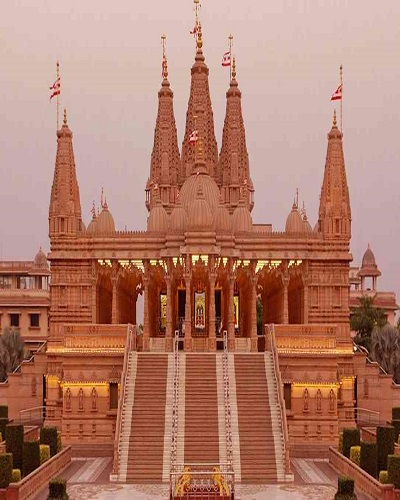
Nagpur
The best season to visit Nagpur is from the month of October to March. Spanning from December to January winters are pleasing with a minimum temperature of about 10°C. This is the best time to visit Nagpur.Read More
Nagpur
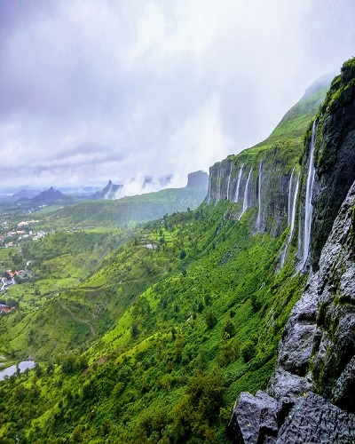
Nashik
The best season to visit Nashik is the winter season. The temperature remains comfortable and is apt for sightseeing. The best months to visit are October, November, December, February and March. Nashik experiences moderate rainfalls in the months of June and lasts till September.Read More
Nashik
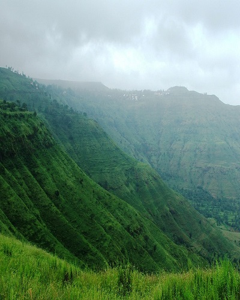
Panchghani
The best season to visit Panchgani is the winters and the onset of summers. The temperature remains comfortable and is apt for sightseeing. The best months to visit are September, October, November, January, February, March, April and May.Read More
Panchghani
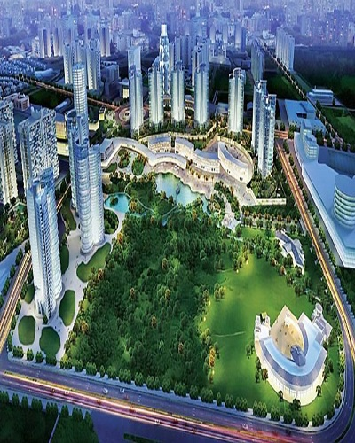
Pune
Well, the months of October to February is the ideal time to visit Pune as the climate is pleasant with cool and humid atmosphere and makes it perfect for sightseeing. Read More
Pune
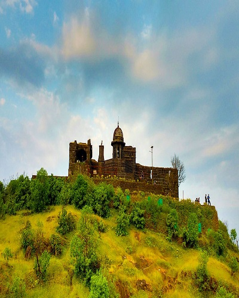
Raigad
The best season to visit Raigad is the winter season. The temperature remains comfortable and is apt for sightseeing. The best months to visit are October, November, December, January, February and March.Read More
Raigad
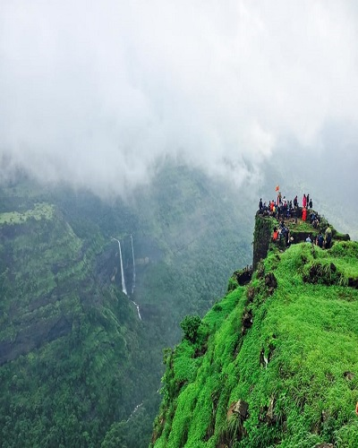
Rajmanchi
The months from June to September is the best time to visit Rajmachi since the monsoon season here greets you with water springs and greenery all over as you keep climbing the fort.Read More
Rajmanchi
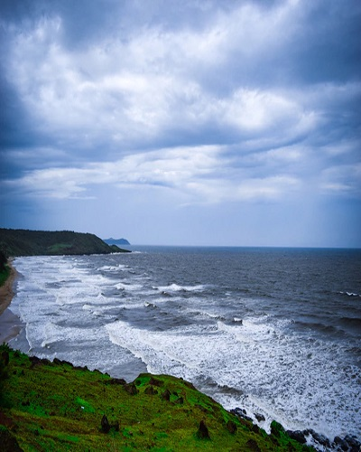
Ratnagiri
Best time to visit Ratnagiri is from October to March.Read More
Ratnagiri
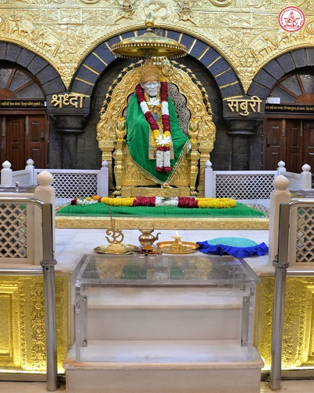
Shirdi
December to February: Winters are the best time to visit Shirdi as the weather is pleasant and is a great time to enjoy your pilgrimage and sightseeing in Shirdi. Read More